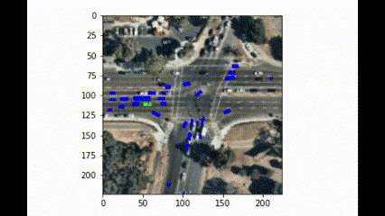

arXiv /
code Kinematic aware, Animatable and Class-agnostic 3D deformable objects from causual monocular videos without the use any priors or camera poses - A Template free approach
Keywords: NeRF , Nerual Blend Skinning , Camera pose optimisation

Lyft L5 toolkit - Motion forcasting Kaggle - Build motion prediction models for self-driving vehicles | 2021 Model Architecture /
code /
Motion prediction with the help of rasterized set of images, CNN , LSTM encoder-decoder based model.
Also, currenly exploring a Vectornet based approach skipping the whole razterization part and making the pipeline faster.
• Detector to find helmets, Image2Map (BEV) \\
• Classifier to classify players into 2(H/V) teams and Registration of detected players on 2D map to provided tracking data. Later track detected \\
bounding boxes and reassign players. \\
• Predict the 2022 College Men’s Basketball Tournament \\
• Analyse the trend based on past 5 year’s data
Annotate and classify cathater position. Robust approach to get the endpoints of the cathaters even though the enpoints contribute to a less than 1% footprint of the whole image
We built a system to automatically generate descriptions for videos and answer blind and low vision users’ queries on the videos!
Projects
Adding Complement Objective Training to Pythia: I experimented with adding
Complement Objective Training in FAIR's vision and language framework Pythia and also wrote a
report on my findings here,
the code is here.
Visual Chatbot Version 2.0 (code here): I
shifted the old Lua-Torch codebase to PyTorch, added better captioning and trained the
VisDial model on BUTD features.
Quantized Neural Architecture Search: I quantized the search
space of Neural Architecture Search algorithms (ENAS,
PNAS) to search for
resource-efficient models. Code is here (ENAS),
and here (PNAS).
{kind=link}